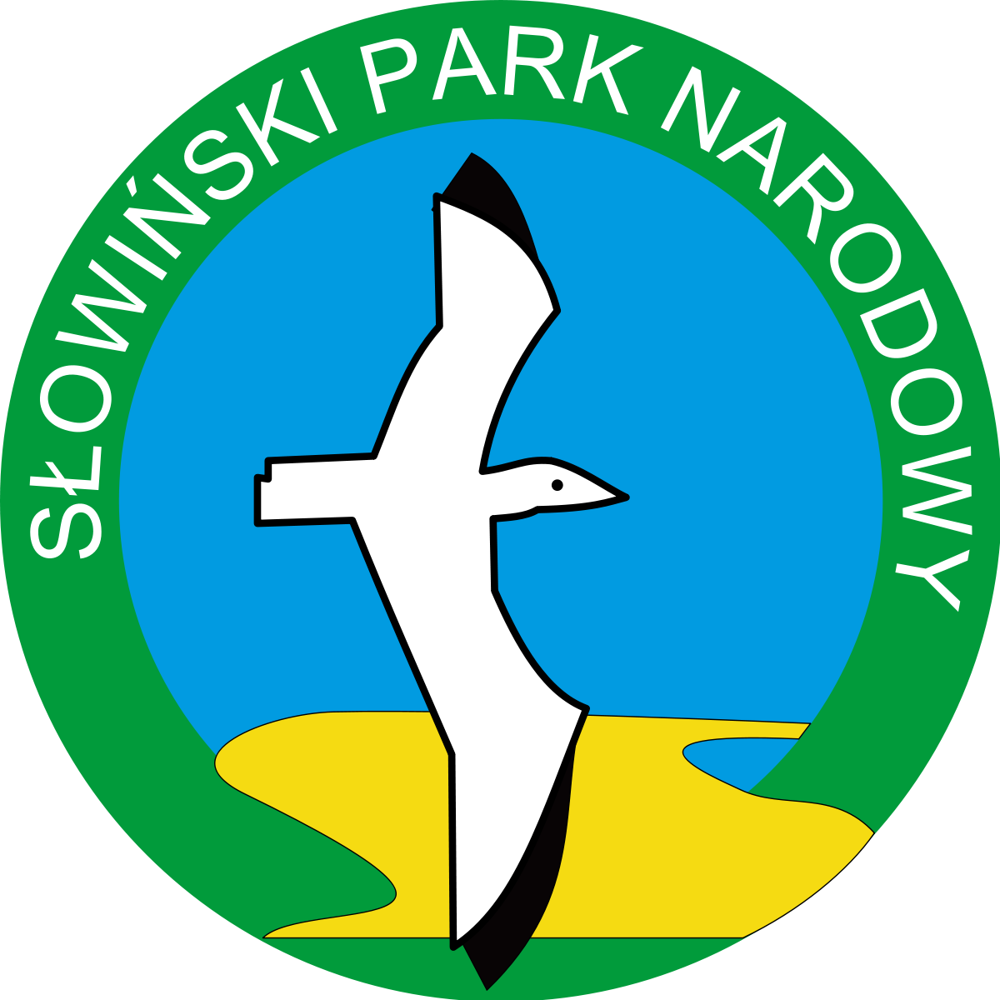

Słowiński Park Narodowy
Został utworzony w roku 1967, a jego powierzchnia wynosi 215,72 km². Tylko dwa parki narodowe w Polsce są większe – Kampinoski oraz Biebrzański. Słowiński Park Narodowy jest położony w środkowej części polskiego wybrzeża, w województwie pomorskim, w okolicach Łeby. Jego symbolem jest mewa srebrzysta. Najbardziej charakterystycznym elementem parku jest wydmowy pas mierzei z ruchomymi wydmami. Ponadto zachwycą nas tu przymorskie jeziora, bagna, łąki, torfowiska, nadmorskie bory i lasy. Można tutaj spotkać około 260 gatunków ptaków, z czego 170 wyprowadza lęgi.